What each processing step does and how to adjust it
In short: details of the processing steps, roughly in the order they run: alignment and integration, linear processing, stretching and stars. AutoContinue reruns processing from intermediate images, for example after a manual fix. External tools like RC Astro tools, GraXpert and StarNet are described at the end.
Settings that are in the Other, Preprocessing, Integration and Postprocessing tabs are visible only in Expert mode. Settings in the Files, Settings, Tools, Enhancements and Interface tabs are visible also in Simple mode.
AutoIntegrate automatically selects the reference images for star align, image integration and local normalization. By default the images with the best SSWEIGHT value are chosen.
It is possible to manually choose reference images. A reference image for star alignment is used to align all light images. For each filter reference images are used for image integration and local normalization.
There is a button that can be used to calculate SSWEIGHT values for each file and automatically mark reference images to the file list. It is useful for checking which files would be chosen and fine tune the selection if needed. SSWEIGHT values are calculated for the files in file list that may not debayered or cosmetically corrected so they may differ from those calculated during processing. If no reference images are selected manually then automatically selected images are marked to the file list after processing. They can be found also from the AutoIntegrate log file.
Note that manually selecting reference images for filters do not work with OSC images if the Extract channels option is used. In that case extracted channel images should be loaded separately as LRGB images to choose correct reference images.
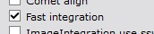
AutoIntegrate supports the FastIntegration process. FastIntegration is a new process that is available in PixInsight version 1.8.9-2 or later. It is a faster version of the old ImageIntegration process. It is recommended to use FastIntegration instead of ImageIntegration if you want quick results or if you have a huge number of images.
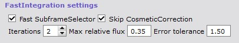
FastIntegration has some setup options in Integration / FastIntegration section. By default FastIntegration skips cosmetic correction and also uses a subset of frames to find the reference image. It is possible to change these settings in the FastIntegration section.
FastIntegration also supports drizzle integration. Drizzle integration is useful when you have undersampled data and you want to increase the resolution of the image. Note that drizzle integration uses the normal DrizzleIntegration process so some performance benefits of FastIntegration are lost.
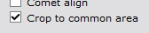
It is possible to automatically crop bad pixels on the sides of the images. This works by integrating all images, finding an area where all images are contributing and cropping channel images to that area.
Automatic cropping makes it easier to get an image with only good data in it. It also helps automatic processes such as stretching because only real data is included in the image.
To check how much cropping was done, an image AutoCropInfo is left minimized on the screen together with the integrated images. It is also saved to the AutoProcessed directory.
Automatic cropping can be used also during AutoContinue. Cropping requires that the AutoCropInfo file is open in the PixInsight desktop. Cropping can be done only if starting from Integration_[LRGBHSO] or Integration_RGB_color files. In older versions of AutoIntegrate this image was called LowRejectionMap_ALL, and AutoContinue still accepts that name.
In the case of AutoContinue it is possible to edit the crop preview area in the AutoCropInfo image. AutoContinue will use the crop preview from AutoCropInfo. In this way it is possible to rerun the processing using a different crop if needed.
Below is an example that shows the difference between non-cropped image (left) and cropped image (middle). On the right is an AutoCropInfo image showing the cropped area.
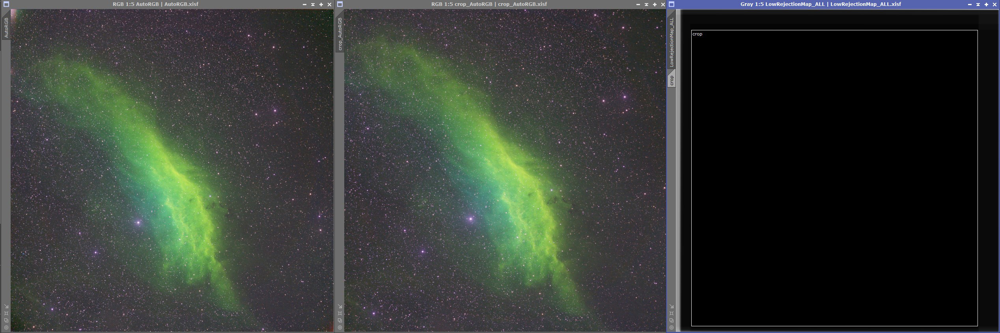
Sometimes the cropping also helps with automatic processing. Below is an example that shows the processing difference between non-cropped image (left) and cropped image (right). Since bad pixels on the side are cropped, automatic processing can better stretch the images since there is only real data in the image.
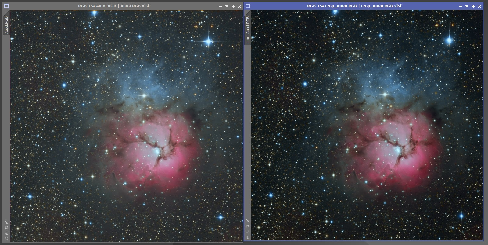
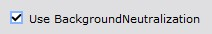
Option Use BackgroundNeutralization can be selected to run the background neutralization process automatically.
For background neutralization a method is added to find a true background area in an image. True background area is then used by the BackgroundNeutralization process. A new image named AutoBackgroundModel is created that shows the background area. The AutoBackgroundModel can be edited and it is used with AutoContinue if it already exists.
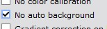
Finding a true background is enabled by default but can be switched off with the No auto background option in the Other / Other parameters section.
Multiple options for gradient correction are available. The default option is to use the GradientCorrection process.
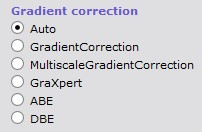
There are options to use the following processes for gradient correction.
To try out different gradient correction methods there is a standalone script Gradient Correction in the Script / AutoIntegrate menu.
Gradient correction is selected in the Settings / Tools section.
Notes on different gradient correction methods:
For setting the parameters for the gradient correction processes, see Postprocessing / Gradient correction, ABE settings, DBE settings section and Tools / GraXpert section.
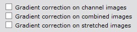
There are options to select when the gradient correction is executed. The default option is not to do gradient correction. One of these options must be selected to do gradient correction. Also multiple options can be selected at the same time.
At which point of the processing the gradient correction is executed is selected in the Settings / Image processing parameters section.
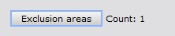
When using DBE it is possible to exclude an area for selecting sample points. This can be useful for example when there is nebulosity with low brightness in the image. Exclusion area is used also when selecting background sample for background neutralization.
Exclusion area is set in the Postprocessing / Gradient correction, ABE settings, DBE settings section. It opens a new dialog where you can select the exclusion area. From the drop down list is is possible to select the image that is used for selecting the exclusion area. If the image is non-linear it is auto stretched for the exclusion area dialog.
If images are not well aligned, it is recommended to use the Settings / Image processing parameters / Integrate only option. This will align the images before the exclusion area is selected. Autocontinue can then be used to continue the processing.
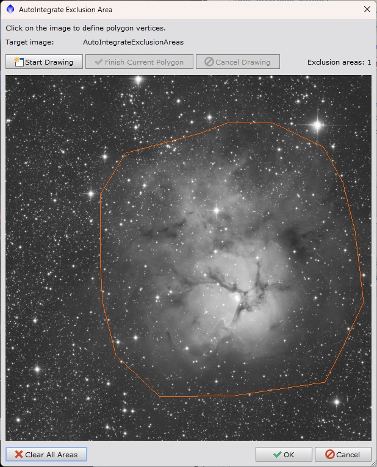
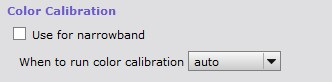
By default color calibration is done using the ColorCalibration process. It is run on the linear RGB image before the image is stretched to non-linear.
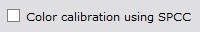
Optionally SpectrophotometricColorCalibration (SPCC) can be used for color calibration. Option Color calibration using SPCC is used to enable SPCC. SPCC is run on linear RGB image. Some configuration options are available for SPCC.
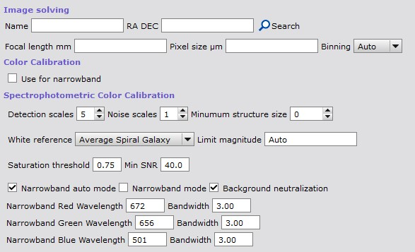
SPCC requires that the image is plate solved. Plate solving is run automatically on Integration_RGB image which is also saved to disk. Some sources say that you should use Drizzle with scale 1 or 2 when using SPCC.
Below is an image that shows results from different narrowband processing using different color calibration and AutoSTF auto/linked/unlinked channel options.
The first row is using defaults with no color calibration and auto (unlinked) channels for AutoSTF. Second row is using SPCC with auto channel link mode. With narrowband images and SPCC the auto channel link mode AutoIntegrate uses linked channels for AutoSTF when there is H assigned into the red channel, otherwise AutoIntegrate uses unlinked channels.
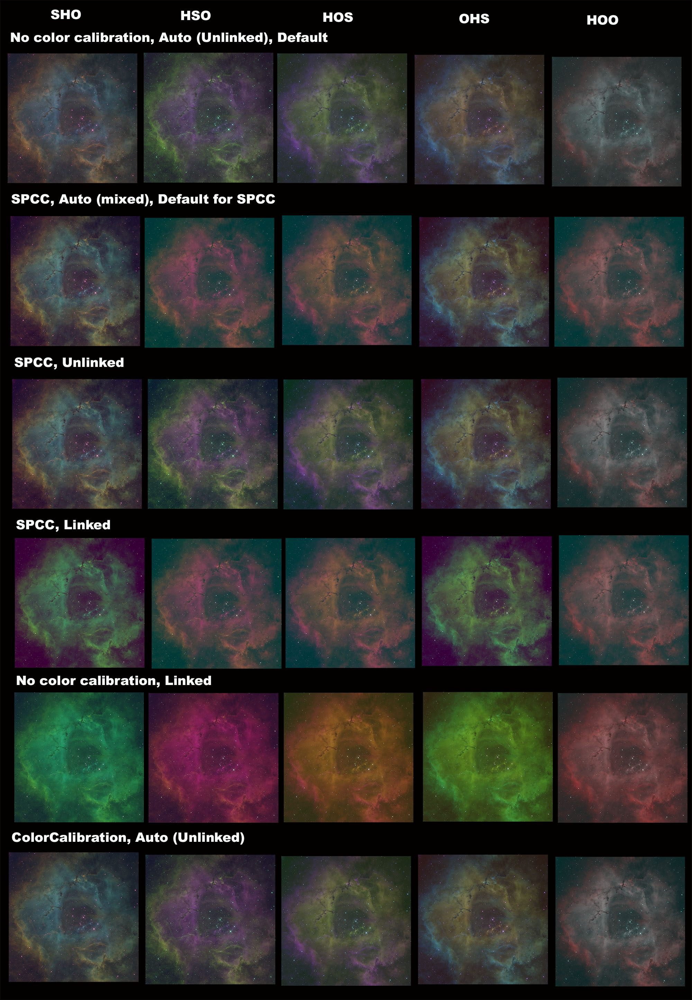
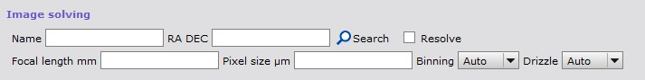
If the image does not have center coordinates for plate solving then coordinates can be given in a new Postprocessing / Image solving section. Coordinates can be given manually or searched using an online database (Sesame). Image solving needs correct focal length to work properly. If focal length is not embedded into image metadata it can be given in the Focal length field.
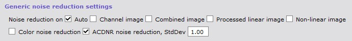
Option Auto selects automatically correct time for noise reduction. It is the default option. Noise reduction is done on the processed linear image, that is, on the combined RGB or color/OSC image and on the luminance image. It is done after possible deconvolution with BlurXTerminator or GraXpert deconvolution and before the image is stretched to non-linear. Noise reduction is done on the combined image and not on the individual channel images.
Option Channel image does noise reduction on each color channels and luminance image separately. This option does nothing with color/OSC images.
Option Combined image does noise reduction on combined image. Image can be from channel combination or from integrated color/OSC image. On L image noise reduction is done before processing which is the same as channel noise reduction.
Option Processed linear image does noise reduction on processed RGB image and possible luminance image in linear stage.
Option Non-linear image does noise reduction in non-linear state after stretching on combined and luminance images.
Noise reduction should be done after BlurXTerminator or GraXpert deconvolution. Option Auto does that, other possible options are Processed linear image and Non-linear image. Note that option Combined image does noise reduction before deconvolution. But it is always good to experiment what is best for your own data.
By default noise reduction uses MultiscaleLinerTransform. There are also several AI tools available for noise reduction: NoiseXTerminator, GraXpert denoise, DeepSNR or MLDenoise.
MLDenoise is a noise reduction process that is included in PixInsight starting from version 1.9.5 so it does not need to be installed separately. It is selected in the Settings / Tools section.
MLDenoise needs a model file that must be downloaded separately. Model files have a .xmlm extension and they can be saved to any directory. The model file is set in the Tools / MLDenoise section. If the model file is not set when MLDenoise is selected, the script asks for it. The model file must be given in AutoIntegrate, setting it in the PixInsight process does not suffice.
The amount of noise reduction, high-precision inference and local support are set in the Postprocessing / Noise reduction section. Other MLDenoise settings use the default values.
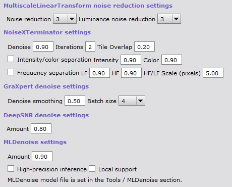
Options for different noise reduction tools.
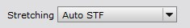
AutoIntegrate offers a few options to stretch an image from linear to non-linear.
To try out different stretching methods there is a standalone script Image Stretching in the Script / AutoIntegrate menu.
Auto STF is the default stretch. It is good in most cases. It can be fine tuned with STF targetBackground parameter. If you get too bright an image you can try lowering targetBackground value.
MultiscaleAdaptiveStretch is the new a new built in stretching tool in PixInsight.
Masked Stretch is a good choice when Auto STF does not give a good image. For example with bright galaxy images Masked Stretch is a good choice as it keeps brightness in control and gives better saturation.
VeraLuxHMS can work well on many targets. Typically it is great if you want saturated results.
VeraLux HyperMetric Stretch is a new stretching method created by Riccardo Paterniti. His original implementation is done in Python for Siril. This new stretching looks very interesting and has been added to the AutoIntegrate script.
The AutoIntegrate implementation was done using the original Python version that was found from GitLab. It was converted to the PixInsight Javascript using Claude AI tool.
A minimal Histogram based stretch is done before Masked Stretch. This can help with stars that can be too pointlike with Masked Stretch. There is a separate parameter for the histogram prestretch target.
Histogram stretch is a very simple stretch that moves the histogram median or peak to the target value. Stretch is done iteratively in small steps.
Histogram stretch works best with images that are processed with the Crop to common area option.
There are a few other stretch methods available. These could be described as experimental. They may not be as useful as other stretch methods but they can be helpful in some special cases.
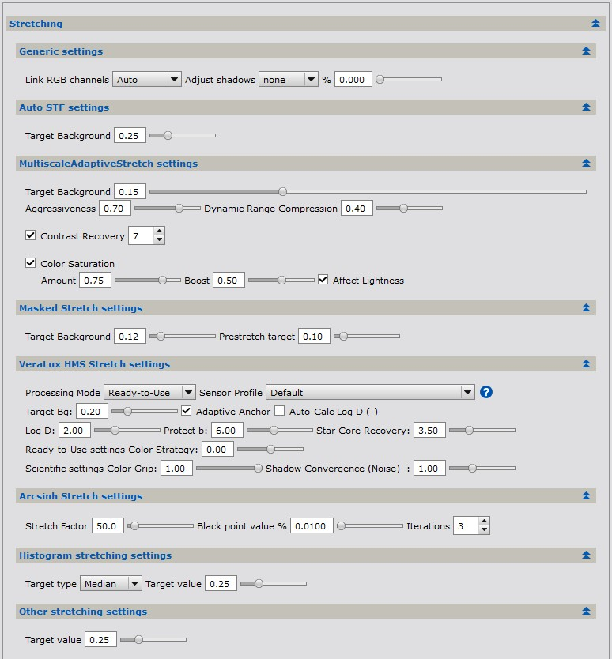
In the Postprocessing / Stretching section there are some settings for the stretch methods.
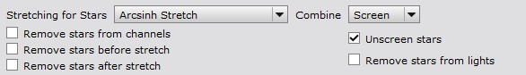
AutoIntegrate can automatically remove stars from an image. There are a few options to remove stars and combine them back into the starless image. Starnet2 or StarXTerminator can be used to remove stars. Star removal and stretching options are available in the Postprocessing / Star stretching and removing section.
A separate stretching is used for the stars image. Stars image stretching and combining settings are selected using the Stretching for stars and Combine options.
A separate RGB stars section has an RGB stars option that is used to create RGB stars for narrowband images. For more details see Automatic processing of RGB stars in the narrowband guide.
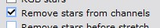
With LRGB and narrowband images this option removes stars from L, R, G, B, H, S and O channel images separately before channels are combined and while images are still in the linear stage. Star images from channels are then combined to create a star image.
With color images (DSLR/OSC) the option removes stars after color calibration while the image is still in the linear stage.
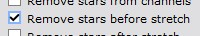
Removes stars from combined RGB or narrowband images just before stretching while it still is in the linear stage. Stars are used only from the RGB/narrowband image, stars from the L image are not used.
For OSC data this may not work well. Separating channels might help.
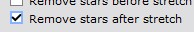
Removes stars from combined RGB or narrowband images just after stretching when the image is not any more in linear stage. Stars are used only from the RGB/narrowband image, stars from the L image are not used.
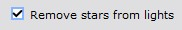
This option removes stars from each individual light image. Star removal is done after star alignment and before optional comet alignment.
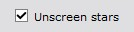
For both normal and enhancements processing there is an Unscreen stars checkbox. This option uses a bit of a different method to generate the stars image as described by Russell Croman. For details see this post: "Unscreening" and re-screening: recombining stars with starless images
The Unscreen method usually keeps star colors more correct than simple star removal. It is recommended to use the Screen method when combining star and starless images back together.
Unscreen stars is enabled by default.
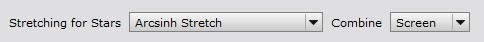
When stars are removed before stretching then a different stretching can be used for the stars and potentially get better star colors.
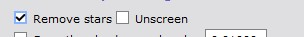
Removes stars from the final image to generate a starless image and a separate stars image.
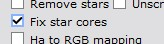
Sometimes star cores can be too bright and need to be fixed. There is an Enhancements option Fix star cores to fix star cores in the Enhancements / Generic enhancements section.
Stars can be reduced either separately or when combining starless and star images.
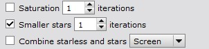
Enhancements option Smaller stars reduce star sizes. Number of iterations can be selected when reducing star sizes. Value zero uses Erosion instead of Morphological Selection
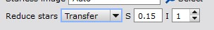
When combining starless and star images it is possible to reduce stars using PixelMath expressions created by Bill Blanshan. There are three different methods: Transfer, Halo and Star. There is also a control parameter for each method. For details see this YouTube video
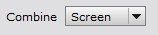
For combining starless and star images there are three different options: add, screen and lighten. Add is a simple PixelMath operation to add stars back. Screen and lighten are equivalent to similar Photoshop blending modes.
Combine option can be set separately in the Postprocessing / Star stretching and removing section and Enhancements / Generic enhancements section.
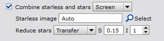
Enhancements processing has some additional options when combining starless and stars images.
To use the Enhancements option combine you need to have starless and stars images open on the desktop. Starless image must be selected as the target image.
With a default Auto mode AutoIntegrate tries to automatically find the stars image based on the starless image name. It assumes that your starless image name has a text starless and stars image name has a text stars. So a starless image sameprefix_starless_whatever is matched with a stars image sameprefix_stars_doesnotmatterwhatishere. You should get an error if a matching stars image is not found.
Using the select button it is possible to manually select the stars image from images open on the desktop.
Reduce stars options can be used to reduce star sizes during combine. These options use PixelMath equations created by Bill Blanshan.
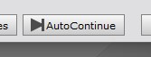
AutoContinue runs automatic processing from previously created LRGB/RGB, Narrowband or OSC/Color images. The idea with AutoContinue is that it is possible to start from integrated images and then run processing with different options. For example you can run AutoIntegrate with default settings and then use AutoContinue to run different options on the same images.
AutoContinue makes it possible also to run manually gradient correction or histogram transformation on the automatically processed images and then again continue automatic processing from there.
AutoContinue looks for images with fixed names and if it finds them it starts processing from those images. It is also possible to load integrated images for example from WBPP to the light files. If fixed image names are not found, option Integrated lights in Files tab is checked and light files have only one image for a filter then it is considered as an integrated light image.
Image names are based on intermediate images created by the script but they have a special extension to separate them from automatically generated images. An exception is integrated channel or RGB images which can be used as a starting point to run different processing on automatically created images. They are useful for example for testing with different stretching options or narrowband palettes.
Starting points and the search order for AutoContinue are listed below
Not all images must be present, for example the L image can be missing.
Explanation of terms used in image names:
In the simplest case you can use AutoContinue after basic processing is done and all icons are still on the desktop. In that case you can for example change the stretching setting or some other options, set a new Window Prefix to avoid overwriting previous processing and then run AutoContinue.
Below is an example of how to run manual gradient correction on images and then continue automatic processing from there. The example assumes that a base processing has been done with AutoIntegrate.
Below is an example of how to run manual stretching on images and then continue automatic processing from there. The example assumes that a base processing has been done with AutoIntegrate.
These tools are not part of PixInsight and must be installed separately. AutoIntegrate uses them automatically when they are selected.
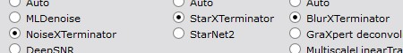
In the Settings / Tools section there are options to use RC Astro tools. In the Tools tab there are some configuration settings for RC Astro tools which are described below.
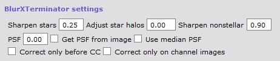
In the Tools / StarXTerminator, BlurXTerminator, NoiseXTerminator section there are settings for BlurXTerminator.
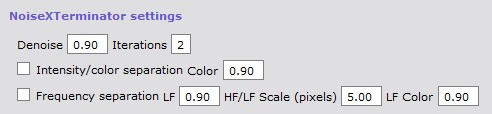
In the Postprocessing / Noise reduction section there are settings for NoiseXTerminator.
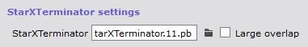
In the Tools / StarXTerminator, BlurXTerminator, NoiseXTerminator section there are settings for StarXTerminator.
There it is possible to select other than the default AI model. You can see the default AI model in the tooltip. AI models are stored in the PixInsight installation directory and have a .pb extension. At least in Windows they are in the PixInsight/library directory.
If you are getting tiling artifacts you can check Large overlap option. It runs slower but should give better results.
It is possible to use GraXpert for gradient correction, denoising or deconvolution of the image.
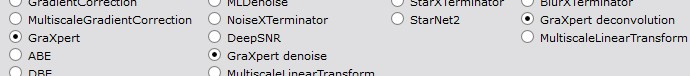
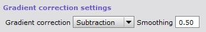
For gradient correction GraXpert can be used instead of default gradient correction. GraXpert can be used by checking the GraXpert option in the Settings / Tools section. Smoothing and correction settings can be configured. When GraXpert is used from the script it always uses the AI model when removing gradients.
By default no gradient correction is done. To use GraXpert for gradient correction you need to also check one of the gradient correction options in the Settings / Image processing parameters section.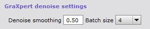
For denoising GraXpert can be used instead of default noise reduction. GraXpert can be used by checking the GraXpert denoise option in the Settings / Tools> section. Smoothing and batch size settings can be configured in the Postprocessing / Noise reduction section.
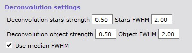
GraXpert deconvolution can be used to improve start quality and sharpen the image. It is used is used instead of the default image sharpening. GraXpert deconvolution can be used by checking the GraXpert deconvolution option in the Settings / Tools> section. Strength and FWHM settings can be configured in the Tools / GraXpert section for both stars and objects (non-stars).
Option Use median FWHM uses median FWHM from the subframe selector as the FWHM value. This value is calculated during AutoIntegrate processing and saved to the image metadata. Value is also printed to the AutoIntegrate.log file with a name AutoIntegrateMEDFWHM.
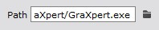
GraXpert is run as an external process so it must be installed on the computer before it can be used.
To use GraXpert first the path to the GraXpert binary must be set in the Tools / GraXpert section.
GraXpert AI model must be loaded manually before it can be used from AutoIntegrate. To load the AI model, run GraXpert manually once and close it. AutoIntegrate uses the default model.
Note that AutoIntegrate supports GraXpert version 2.2.0 or later.
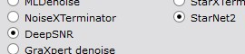
StarNet2 can be used to remove stars from the image. Before StarNet2 can be used it must be installed to PixInsight.
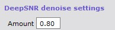
DeepSNR can be used to reduce noise in the image. Before DeepSNR can be used it must be installed to PixInsight. In Postprocessing / Noise reduction section there are settings for DeepSNR.